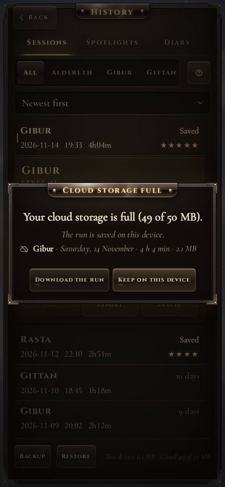

Throwaway mockups for the five points of stage 63 (runs in the cloud), in the real look: the start menu logged in, History (Sessions, Stats, Spotlights, Diary), its Delete dialog, the Log out dialog, the desktop Exit popup and the phone exit sheet, as captured from a dev server with the account API's e2e fake (flags accounts, sync and runs on); the new parts drawn over them. Each picture opens that state in the one file; there the tabs switch point, variant and state, and Desktop / Phone the view. README.md beside this file has each variant, a recommendation per point and what did not fit.
Rated and saved in the Exit popup (desktop) or the exit sheet (phone): the upload runs once the game has ended, so the answer arrives on the start page. The kit’s dialog over the menu; Enter keeps the run on this device.
Saved from History’s card: the dialog over History. Open History would lead where the player already is, so it is left out here.
The client knows the account’s use and the run’s size before the game ends, so the popup (desktop) and the exit sheet (phone) can say it as soon as a rating is given: the same words under the stars, and Download the run beside Exit. Exit still saves the run on this device. Elsewhere (History; a run that fills the cloud only once uploaded) the dialog of a.
Elsewhere b uses the dialog of a: History’s Save or Rate, and the start page when the cloud filled up only after the Exit (an upload of another device in between).
A narrow first column: a cloud for a session only in the cloud, a struck cloud for a saved run not in the cloud, nothing for a run in step (and for unsaved runs, which never go up). The size of every session in a column of its own; the chosen row’s mark shows its tooltip. The foot’s storage line gives both stores.
A session saved on another device, chosen: the card has everything the run item carries (level, deeds, rating) and says under Log that it is fetched when opened. Run log, Stats and Export fetch it first.
Run log pressed on the cloud-only session: stage 24’s bar in the card, bytes of the body over its size; the actions wait. Then the run log opens as for any session, and the mark goes.
No network: the cloud-only rows are quieter and say so; the card says why Run log, Stats and Export cannot open it. Rate and Delete still work (they are item writes that wait for the network).
No new columns: a quiet tag beside the name says “in the cloud · 2.4 MB” or “not in the cloud”; a run in step and an unsaved run say nothing. The foot’s storage line gives both stores.
A session saved on another device, chosen: the card has everything the run item carries (level, deeds, rating) and says under Log that it is fetched when opened. Run log, Stats and Export fetch it first.
Run log pressed on the cloud-only session: stage 24’s bar in the card, bytes of the body over its size; the actions wait. Then the run log opens as for any session, and the mark goes.
No network: the cloud-only rows are quieter and say so; the card says why Run log, Stats and Export cannot open it. Rate and Delete still work (they are item writes that wait for the network).
Round 9’s single saved-runs row, now “not in the cloud”, with the reasons in the quieter second line the changes row already uses (stage 62). The unsaved runs’ row as built.
A row for each reason: “not in the cloud — cloud full” and “too large for the cloud”. The unsaved runs’ row as built.
History’s Delete dialog as built; its warning says that the session goes on every device and in the cloud. A guest keeps today’s words.
In the foot, after “5 spotlights · 01:06”: what the reel leaves out, and Fetch all.
Fetch all pressed: stage 24’s bar in the line’s place; the reel is built again when the sessions are here.
In the foot between Previous and Next.
Under the head’s “Session details” line. Statistics shows one session, which is fetched when opened, so nothing in it is left out: the line here says only that other sessions exist (see the README).
On a phone the line has no Fetch all: a phone never fetches a library by itself. Diary’s foot takes it the same way.